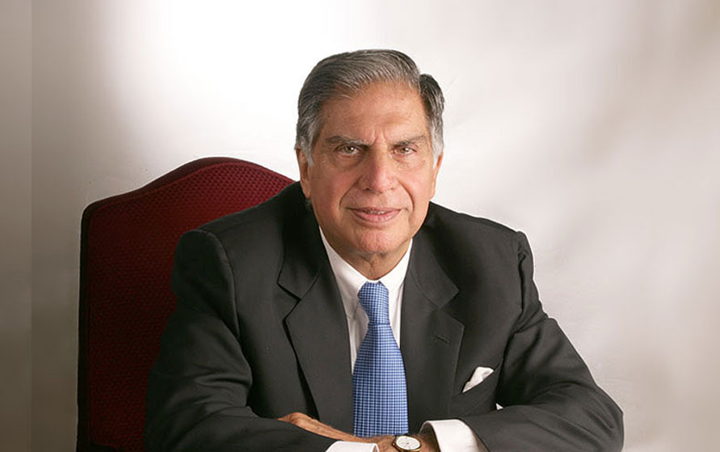

RATAN TATA
---Chairman of Tata Companies

PERSONAL LIFE
Ratan Tata was born in Bombay, now Mumbai, during the British Raj, on 28 December 1937.[6] He is the son of Naval Tata, who was born in Surat and later adopted into the Tata family, and Sooni Tata, the niece of Tata group founder Jamsetji Tata. Tata's biological grandfather, Hormusji Tata, was a member of the Tata family by blood. In 1948, when Tata was 10, his parents separated, and he was subsequently raised and adopted by Navajbai Tata, his grandmother and widow of Ratanji Tata.[7] He has a younger brother Jimmy Tata[8] and a half-brother, Noel Tata, from Naval Tata's second marriage with Simone Tata, with whom he was raised.
He is the son of Naval Tata, who was adopted by Ratanji Tata, son of Jamsetji Tata, the founder of the Tata Group.
“I dont believe in right decisions, I take decisions and make them right.”
---Ratan Tata
EDUCATION
Ratan Tata studied at the Campion School, Mumbai till the 8th class. After which, he studied at the Cathedral and John Connon School in Mumbai, the Bishop Cotton School in Shimla, and the Riverdale Country School in New York City, which he graduated from in 1955.[9][10][11] After graduating from high school, Tata enrolled in Cornell University, from which he graduated with a bachelor's degree in architecture in 1959. In 2008, Tata gifted Cornell $50 Million, becoming the largest international donor in the university’s history
“If you want to walk fast, walk alone. But if you want to walk far, walk together.”
---Ratan Tata
CAREER
In the 1970s, Tata was given a managerial position in the Tata group. He achieved initial success by turning the subsidiary National Radio and Electronics (NELCO) around, only to see it collapse during an economic slowdown.[13][14] In 1991, J. R. D. Tata stepped down as chairman of Tata Sons, naming him his successor. Initially, Tata faced stiff resistance from the heads of various subsidiaries, who had a large amount of operational freedom under the senior Tata's tenure.
In response, Tata implemented a number of policies designed to consolidate power, including the implementation of a retirement age, having subsidiaries report directly to the group office, and requiring subsidiaries to contribute their profit to building the Tata group brand. Tata prioritised innovation and delegated many responsibilities to younger talent.[15] Under his leadership, overlapping operations between subsidiaries were streamlined into company-wide operations, with the group exiting unrelated businesses to take on globalisation
ACHIEVEMENTS
Ratan Tata had set out to reestablish the groups’ identity. For this, it was very important that he welded the organization together in a more cohesive way than it had been in the past so that it could identify itself more as a group. This new identity couldn’t have the same rusty image the company had over the years. Factors that helped here were the infusion of younger talent which made way for innovation and disinvestments from several companies.
One of Tata’s biggest achievements would be of the role it played in the Indian Automobile Industry. Although one would think of Nano when it comes to Tata, it is actually Indica which brought forward this revolution. The Indian truck maker set its eyes on creating India’s first truly Indian car, ‘Indica’. The car was the brainchild of Tata. He promised a vehicle with the dimensions of a (Maruti) Zen, the cabin size of an Ambassador, and the fuel efficiency of a Maruti 800. Its launch in December 1998 transition the group into serious car-making.
AWARDS AND RECOGNITIONS
- Ratan Tata was awarded as "Order of Australia" by the country Australia in 2023.
- He was awarded as "Assam Baibhav" by the highest civilian award of Assam in 2021.
- He is awarded as "Honorary Doctorate" by Swansea University in 2008.
- He is awarded as "Commander of the Legion of Honour" by Government of France in 2016.
- He is awarded as "Sayaji Ratna Award" by Baroda Management association,Honoris Causa, HEC Paris in 2015.
- He is awarded as "Honorary Doctor of Automotive Engineering" by Clemson University in 2015.
- He is awarded as "Honorary Doctor of Laws" by York University, Canada in 2014.
- He is awarded as "Honorary Knight Grand Cross of the Order of the British Empire (GBE) by Queen Elizabeth II in 2014.
- He is awarded as "Honorary Doctor of Business Practice" by Carnegie Mellon University in 2013.
- He is awarded as "Transformational Leader of the Decade" by Indian Affairs India Leadership Conclave in 2013.
- He is awarded as "Foreign Associate" by National Academy of Engineering in 2013.
- He won "Padma Bhushan" by Govt of India in 2000.
- He won "Padma Vibhushan" by Govt of India in 2008.
“Ups and Downs are very important to keep us going, because a straight line even in an ECG means we are not alive.”
---Ratan Tata